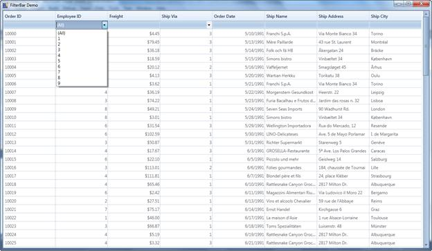
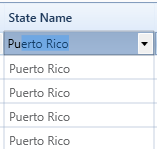

Dropdown FilterBar feature is similar to Text Box Filter instead of entering the key word the dropdown button can be used to filter the items.
To filter items using Dropdown Filter
The Dropdown button is used to filter the required items. We have to set the FilterBarStyle to change the FilterBar cell type.
<syncfusion:GridDataVisibleColumn MappingName="EmployeeID" HeaderText="Employee ID">
<syncfusion:GridDataVisibleColumn.ColumnStyle>
<syncfusion:GridDataColumnStyle CellType="IntegerEdit " HorizontalAlignment="Right">
</syncfusion:GridDataColumnStyle>
</syncfusion:GridDataVisibleColumn.ColumnStyle>
<syncfusion:GridDataVisibleColumn.FilterBarStyle>
<syncfusion:GridDataFilterBarStyle CellType="ComboBox" />
</syncfusion:GridDataVisibleColumn.FilterBarStyle>
</syncfusion:GridDataVisibleColumn>

Figure 177: Dropdown FilterBar
Properties, Methods and Events tables
Properties
|
Property |
Description |
Type |
Data Type |
Reference links |
|
CellType |
Used to select ComboBox or TextBox |
Dependency |
Enum |
NA |
|
ItemsSource |
Used to bind the external item source |
Dependency |
Object |
NA |
|
DisplayMember |
This decides which member should be displayed. |
Dependency |
String |
NA |
|
ValueMember |
Based on the value the items will be filtered. |
Dependency |
String |
NA |
|
FilterBarStyle |
This property used to set the style of the filterbar for the corresponding visible column. |
Dependency |
GridDataFilterBarStyle
|
NA |
To Edit items in Dropdown list

Figure 178: Editable Dropdown filter bar
The behavior is similar to Auto-complete combo box.
Property
|
Method |
Description |
Parameters |
Return Type |
Reference links |
|
IsEditable |
Combine an editable text field and provide users the additional option of typing an item and predict a word or phrase that the user wants to type in the associated text box without the user actually typing it completely. |
Dependency |
Boolean
|
|